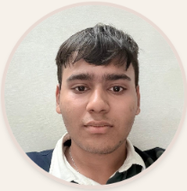

Academics
Navigating first semester coursework — mathematics, physics, engineering mechanics, and computer programming.

Metallurgical & Materials Engineering student at IIT Roorkee.
A first year Metallurgical and Materials Engineering student at IIT Roorkee. I’m here to learn new things, meet great people, and make the most of college life. Always down to chat about cool ideas or build something together.
I'm a Metallurgical and Materials Engineering student at IIT Roorkee, driven by a curiosity about how materials shape the world around us. Why does one material withstand extreme heat while another fails? How can we make materials stronger, lighter, more efficient, or more sustainable? These are the kinds of questions that draw me towards materials science and research.
As I build my foundations in materials science, mathematics, and thermodynamics, I'm eager to explore research opportunities, work on challenging projects, and collaborate with people.
Outside academics, I'm interested in coding, cricket, hockey, singing. I believe a well-rounded student is a better engineer, and I try to stay curious beyond the classroom.
I'm actively looking for research projects, and collaborative work where I can apply what I'm learning, ask good questions, and contribute meaningfully — even as a first-year student still finding my footing.
Navigating first semester coursework — mathematics, physics, engineering mechanics, and computer programming.
Exploring indigenous carbon fibre manufacturing in India, focusing on advanced materials, scalable production, and reducing dependence on imported technology.
Data Structures and Algorithms